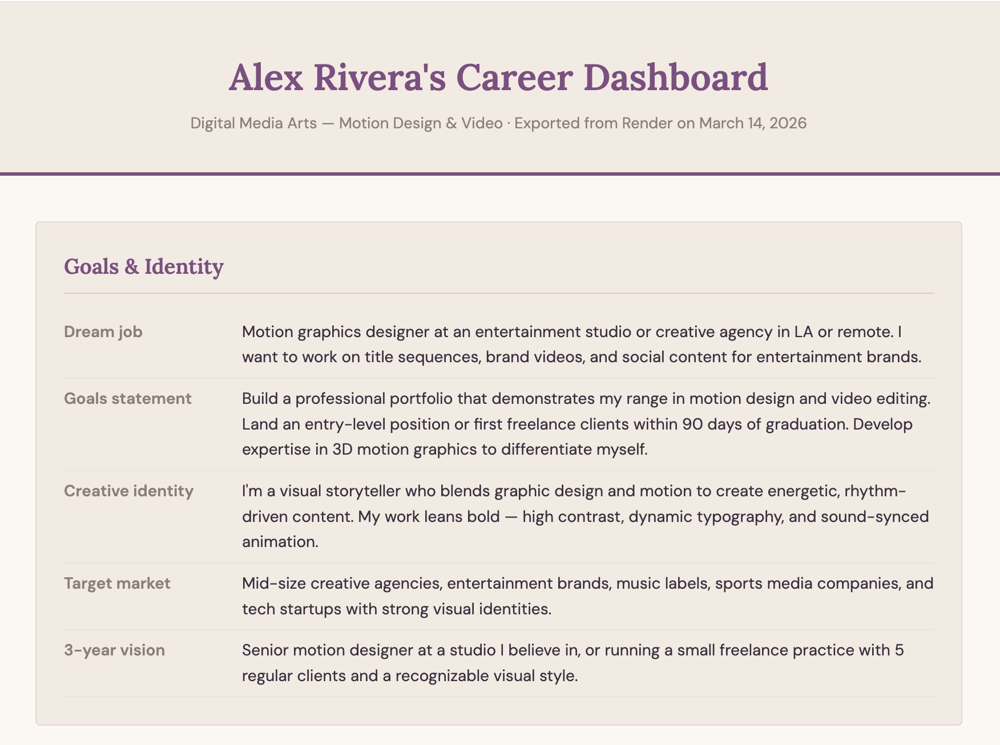
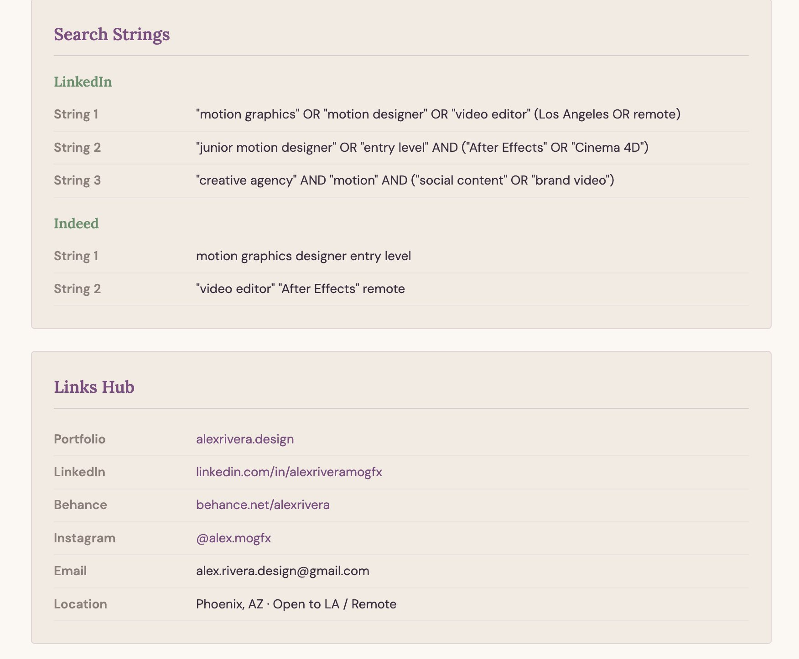
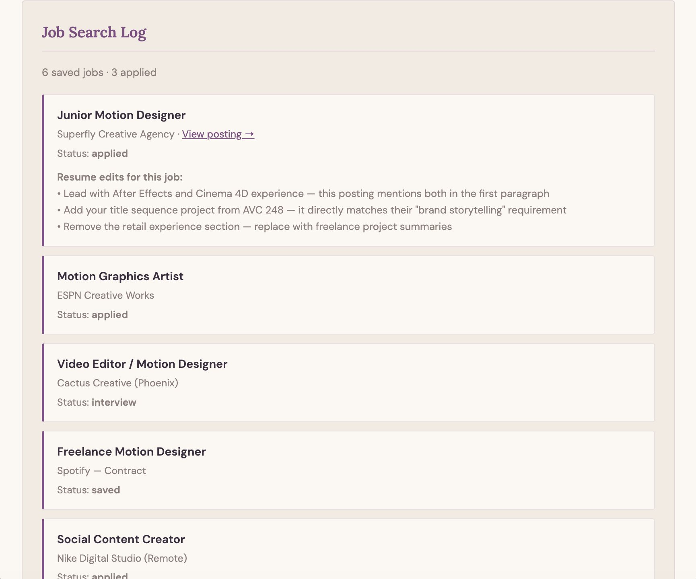
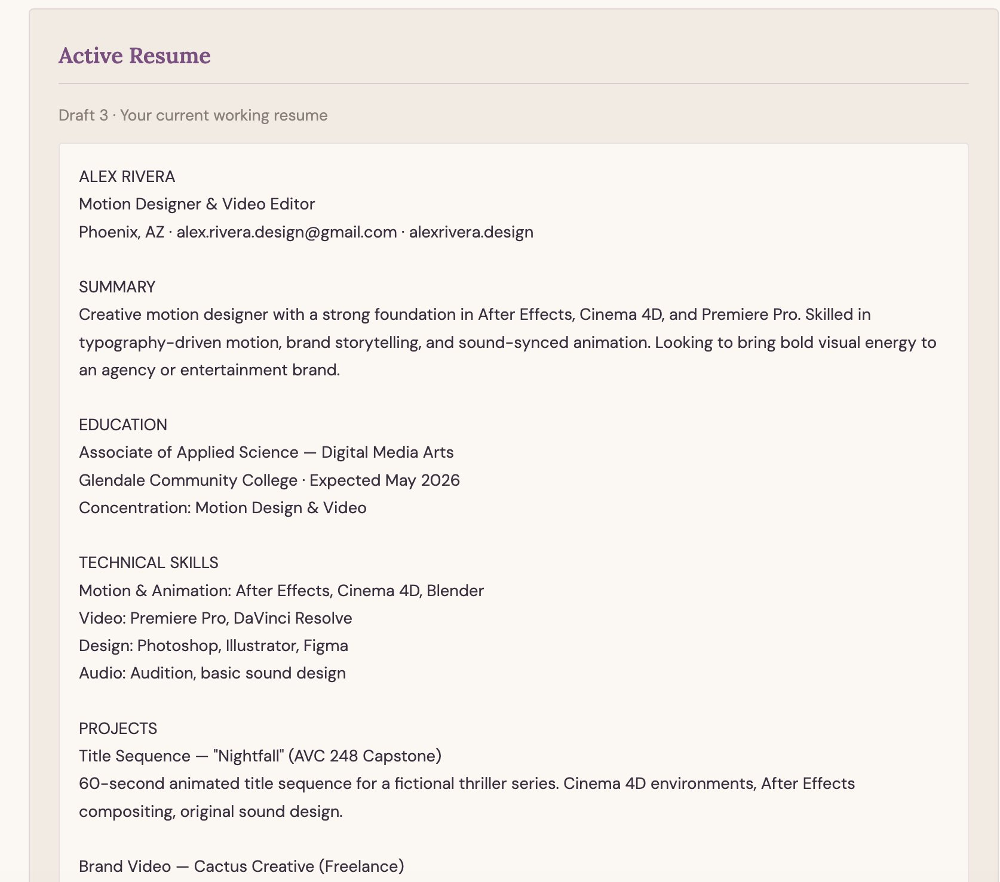
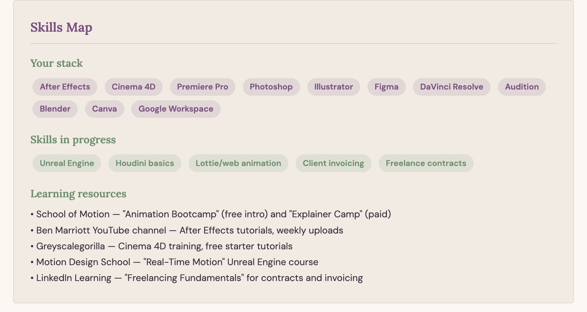
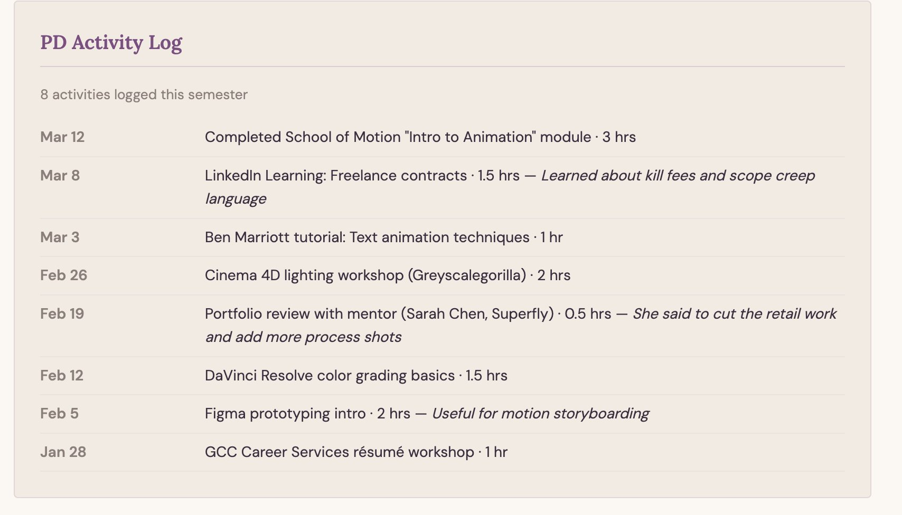
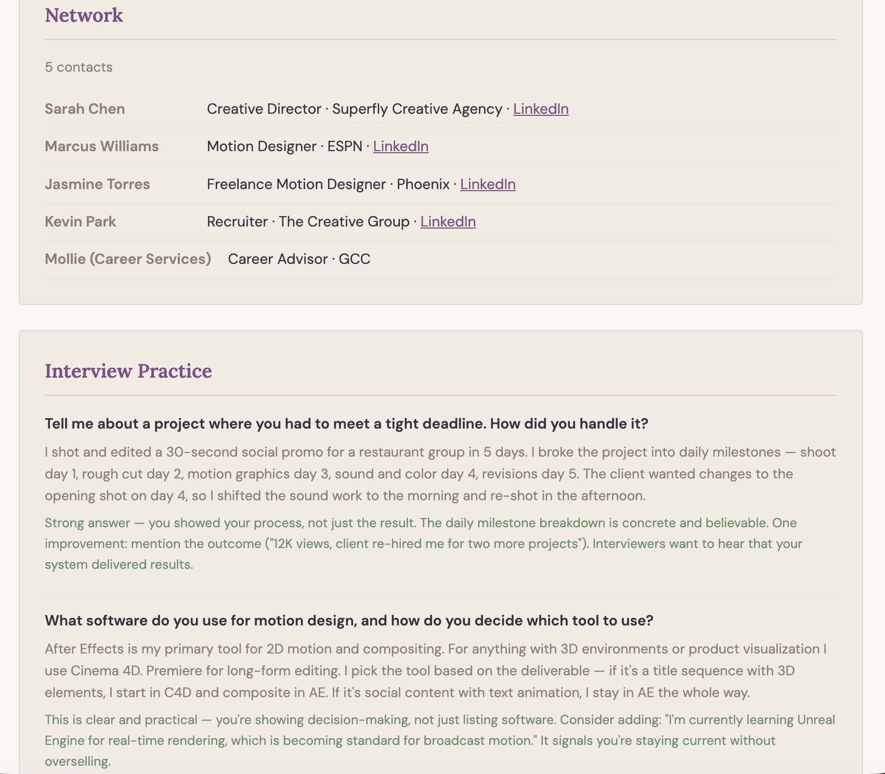
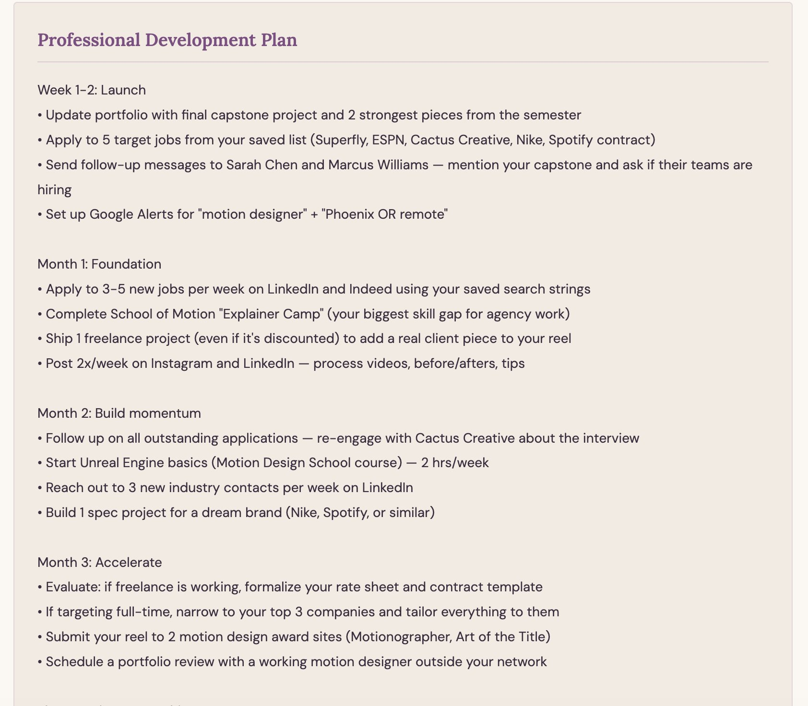
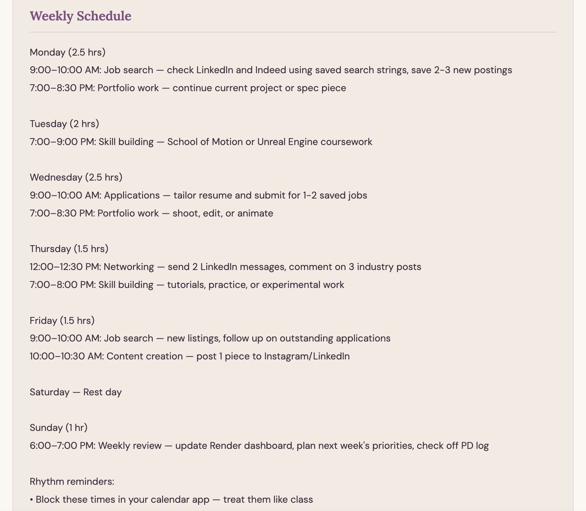
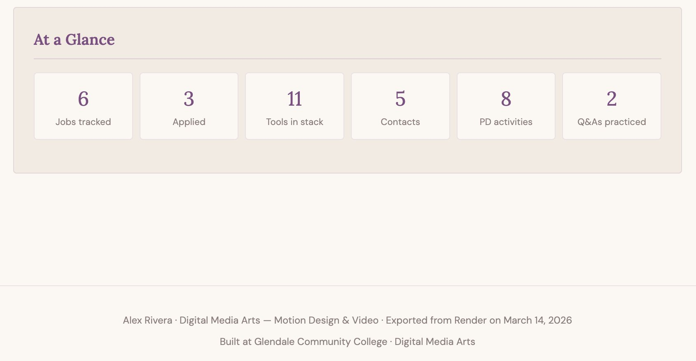

About this demo: "Alex Rivera" is a fictional Digital Media Arts student specializing in motion design and video. This dashboard was exported from Render at the end of their capstone semester. Every section was built incrementally throughout the course, with AI providing tailored analysis, recommendations, and feedback along the way.
Goals & Identity

Search Strings & Links Hub

Job Search Log

Active Resume

Skills Map

PD Activity Log

Network & Interview Practice

Professional Development Plan

Weekly Schedule

At a Glance
